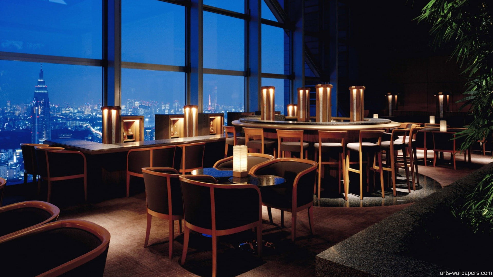
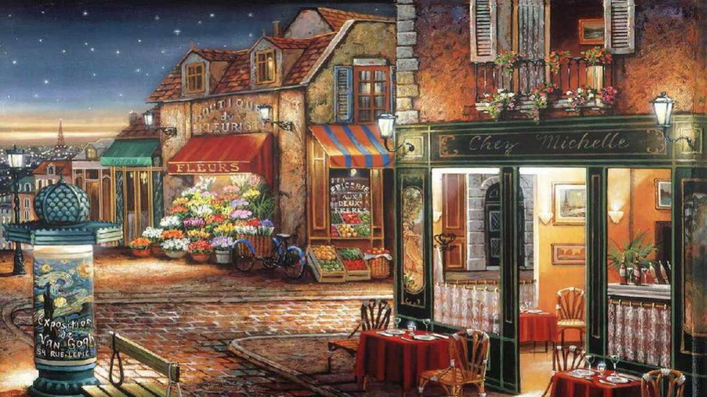
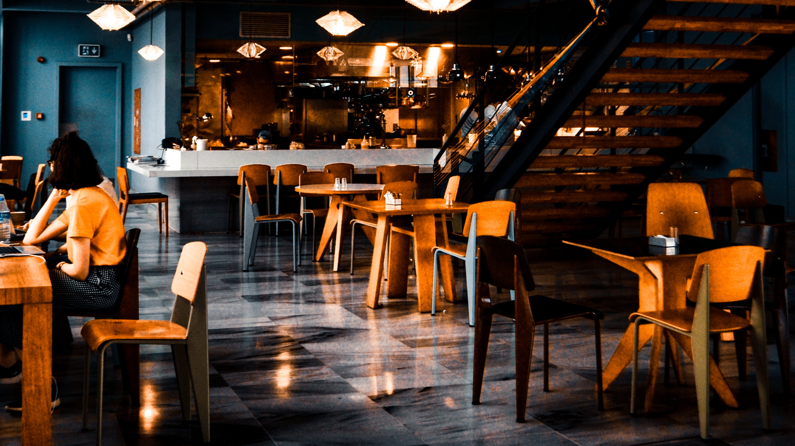

Cantina Studențească
Energie proaspătă pentru o zi plină de cursuri! Cantina noastră oferă meniuri variate în fiecare zi, opțiuni vegetariene și o zonă excelentă de relaxare unde te poți întâlni cu colegii în pauze. Preparatele sunt gătite zilnic, asigurând o masă caldă la prețuri studențești.
- Locație: Clădirea B, Parter
- Program Luni-Vineri: 11:30 - 16:00
- Specialități: Meniul Zilei, Cafea proaspăt prăjită.